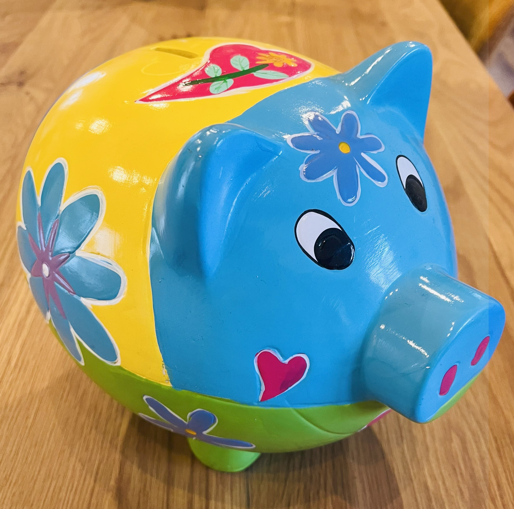

« Tout dans la vie n’est qu’énergies et vibrations »
Albert Einstein
Accompagnement personnel pour un bien-être
En septembre 2021, suite à une opération chirurgicale, c'est au moment précis du retour dans ma chambre que j'ai pu ressentir au plus profond de moi, que j'étais différente.J'ai compris bien plus tard, que le choc émotionnel venait de m'ouvrir des portes sur le monde invisible.A partir de ce moment là, à chaque fois que je fermais les yeux pour me relaxer, je voyais des lieux magnifiques avec une luminosité jamais vue ailleurs, d'autres plantes, d'autres animaux, des portes immenses en bois sculptées magnifiques, je pouvais entendre dans mon oreille gauche, des gens parler. C'est un peu plus tard, que j'allais découvrir mes capacités de guérisseuse et de médium.Depuis cette prise de conscience,mes capacités n'ont jamais cessées de grandir, et c'est, soutenue par mon mari, que j'ai décidé de proposer des soins, afin d'aider les personnes qui souffrent.
Pour l'entièreté de mon histoire, un livre est en cours.
Ce sont des soins corps et âme, en travaillant l'harmonisation énergétique de votre corps, je vais pouvoir
activer les principes de guérison qui vous sont accordés le jour du soin, et faire disparaitre les maux
physiques et psychiques, s'il y'a problématique en particulier le soin sera ciblé.
Mes soins agissent:
Sur le plan physique : Fatigue, troubles digestifs, circulation sanguine, douleurs diverses
(lumbago, migraines, canal carpien, reconstruction de chair, brûlure....).
Sur le plan psychique : Stress, anxiété, crises d'angoisse, de panique, trouble du sommeil, déprime, libérer des blocages émotionnels.
Ils peuvent être pratiqués sur toutes les personnes, enfants ou adultes,sans limite d'âge, ils ne présentent aucune
contre-indications, et peuvent être complémentaires à d'autres outils thérapeutiques (hypnose, eft, emdr etc..) et
viendront dans ce dernier cas renforcer le but recherché.
Après le soin et dans les jours qui suivent, certaines personnes peuvent constatées des sensations physiques inhabituelles,
c'est normal, votre corps est en train de s'adapter au renouveau, l'énergie bouge.
Votre seul et unique thérapeute, c'est vous même !

49170 Saint Léger des bois
Téléphone: 07.66.26.90.95
Prise de rendez-vous par téléphone uniquement